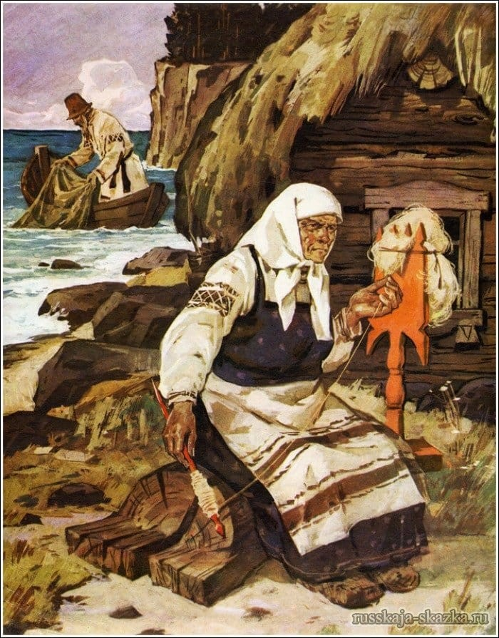

О рыбаке и рыбке
Легендарная сказка А.С.Пушкина

"Глядь: опять перед ним землянка; На пороге сидит его старуха; А пред нею разбитое корыто."
Краткий пересказ
Старик-рыбак ловит волшебную золотую рыбку и отпускает её. Его жадная старуха-жена заставляет старика ходить к морю и просить, чтобы рыбка выполнила её желания, требует слишком много и остаётся ни с чем. Оригинал этого произведения читается всего за 9 минут.
Чему учит эта сказка
- Сказка о людской жадности
- Зло в виде жадной старухи, добро в виде рыбки
- Сказка учит не быть жадным
- Сказка учит тому, что нужно быть всегда бескорыстным
Прочитать книгу можете здесь.